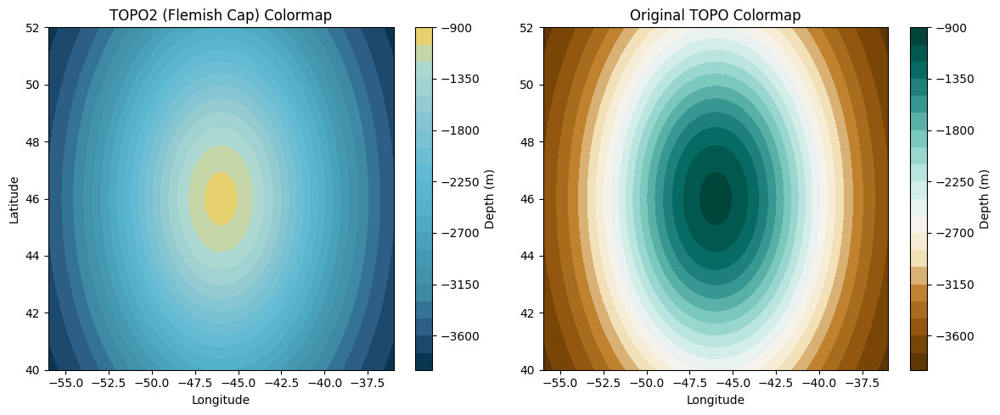
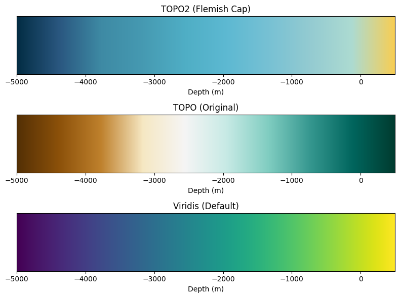

Publication-Quality PyGMT Section Plots
Generate beautiful PyGMT section plots for:
M212 072 towyo section
M212 074 towyo section
Additional hydrographic sections
All plots include CT, SA, and water depth annotations using PyGMT for professional publication quality.
[1]:
# Test the new TOPO2 (Flemish Cap) colormap
import matplotlib.pyplot as plt
import numpy as np
from oceanvis_py.core.colormaps import get_oceanographic_colormap, get_bathymetry_colormap
from oceanvis_py.core.custom_colormaps import CUSTOM_COLORMAPS
# Create sample bathymetry data
x = np.linspace(-56, -36, 100)
y = np.linspace(40, 52, 100)
X, Y = np.meshgrid(x, y)
# Simulate bathymetry: deeper in center, shallower near edges
Z = -4000 + 3000 * np.exp(-((X + 46)**2 + (Y - 46)**2) / 50)
# Plot 1: Test TOPO2 colormap directly
fig, (ax1, ax2) = plt.subplots(1, 2, figsize=(12, 5))
# TOPO2 (Flemish Cap bathymetry)
im1 = ax1.contourf(X, Y, Z, levels=20, cmap=CUSTOM_COLORMAPS["TOPO2"])
ax1.set_title("TOPO2 (Flemish Cap) Colormap")
ax1.set_xlabel("Longitude")
ax1.set_ylabel("Latitude")
plt.colorbar(im1, ax=ax1, label="Depth (m)")
# Original TOPO for comparison
im2 = ax2.contourf(X, Y, Z, levels=20, cmap=CUSTOM_COLORMAPS["TOPO"])
ax2.set_title("Original TOPO Colormap")
ax2.set_xlabel("Longitude")
plt.colorbar(im2, ax=ax2, label="Depth (m)")
plt.tight_layout()
plt.show()
# Test automatic colormap selection
bathymetry_cmap = get_oceanographic_colormap("bathymetry")
print(f"Default bathymetry colormap: {bathymetry_cmap.name}")
# Test PyGMT colormap path
cpt_path = get_bathymetry_colormap("flemish_cap")
print(f"PyGMT colormap path: {cpt_path}")
# Show available bathymetry styles
for style in ["flemish_cap", "topo2", "topo"]:
try:
path = get_bathymetry_colormap(style)
print(f"Style '{style}': {path}")
except Exception as e:
print(f"Style '{style}': {e}")
# Create a colorbar comparison
fig, axes = plt.subplots(3, 1, figsize=(8, 6))
# Sample data range from deep ocean to land
depths = np.linspace(-5000, 500, 256).reshape(1, -1)
# Plot each colormap
colormaps = [
("TOPO2 (Flemish Cap)", CUSTOM_COLORMAPS["TOPO2"]),
("TOPO (Original)", CUSTOM_COLORMAPS["TOPO"]),
("Viridis (Default)", plt.cm.viridis)
]
for i, (name, cmap) in enumerate(colormaps):
im = axes[i].imshow(depths, cmap=cmap, aspect='auto', extent=[-5000, 500, 0, 1])
axes[i].set_title(name)
axes[i].set_xlabel("Depth (m)")
axes[i].set_yticks([])
plt.tight_layout()
plt.show()
# Quick test of all available custom colormaps
print("Available custom colormaps:")
for name, cmap in CUSTOM_COLORMAPS.items():
print(f" {name}: {cmap.name}")

Default bathymetry colormap: TOPO2
PyGMT colormap path: /home/runner/work/oceanvis-py/oceanvis-py/oceanvis_py/config/saved_colormaps/topo_negative.cpt
Style 'flemish_cap': /home/runner/work/oceanvis-py/oceanvis-py/oceanvis_py/config/saved_colormaps/topo_negative.cpt
Style 'topo2': /home/runner/work/oceanvis-py/oceanvis-py/oceanvis_py/config/saved_colormaps/topo_negative.cpt
Style 'topo': /home/runner/work/oceanvis-py/oceanvis-py/oceanvis_py/config/saved_colormaps/topo.cpt

Available custom colormaps:
TEMP2: TEMP2
TEMP: TEMP
SAL: SAL
TOPO: TOPO
TOPO2: TOPO2
POLAR: POLAR
OXY: OXY
PurGre: PurGre
CHL: CHL
Y2R: Y2R
BLUE: BLUE
CAT: CAT
Data Loading
[2]:
# Updated approach using fixed oceanvis-py plot_bathymetry_map function
from oceanvis_py.plots.maps import plot_bathymetry_map
from oceanvis_py.core.colormaps import get_bathymetry_colormap
from pathlib import Path
# Define region
region = (-56, -36, 40, 52)
bathymetry_file = "/Users/eddifying/Dropbox/data/GEBCO2/netcdf/M212_bathy_38N.52N_056W.036W.nc"
try:
# Get the figure object to continue adding annotations
fig, output_file, temp_bathy = plot_bathymetry_map(
bathymetry_file=bathymetry_file,
region=region,
projection="M5i",
cpt_file=get_bathymetry_colormap("flemish_cap"),
title="M212 cruise track",
output_file="map_m212_complete.png",
dpi=300,
return_figure=True # Get figure object back
)
# Add the geographic annotations to the same figure
fig.text(x=-51.25, y=44.55, text="G R A N D", justify="CB",
font="8p,Helvetica-BoldOblique,100/100/100", no_clip=True)
fig.text(x=-51.25, y=44.45, text="B A N K S", justify="CT",
font="8p,Helvetica-BoldOblique,100/100/100", no_clip=True)
fig.text(x=-45, y=47.05, text="F L E M I S H", justify="CB",
font="8p,Helvetica-BoldOblique,100/100/100", no_clip=True)
fig.text(x=-45, y=46.95, text="C A P", justify="CT",
font="8p,Helvetica-BoldOblique,100/100/100", no_clip=True)
# Save the complete map with annotations
fig.savefig("map_m212_complete.png", dpi=300)
fig.show()
# Clean up temporary file
try:
Path(temp_bathy).unlink()
except FileNotFoundError:
pass
print(f"✓ Created complete map with annotations")
except Exception as e:
print(f"Error: {e}")
print("Check that PyGMT is properly installed and the bathymetry file path is correct")
Error: Error loading GMT shared library at 'libgmt.so'.
libgmt.so: cannot open shared object file: No such file or directory
Check that PyGMT is properly installed and the bathymetry file path is correct
[3]:
# Copy ship track files and create map with tracks
import shutil
import glob
from pathlib import Path
from oceanvis_py.plots.maps import plot_bathymetry_map
from oceanvis_py.core.colormaps import get_bathymetry_colormap
# Copy ship track files
source_pattern = "/Users/eddifying/Cloudfree/github/oceanvis-py/notebooks/gmtdata/ship_track_m212*.xy"
dest_dir = Path("data")
dest_dir.mkdir(exist_ok=True)
# Find and copy all matching files
track_files = []
for source_file in glob.glob(source_pattern):
dest_file = dest_dir / Path(source_file).name
shutil.copy2(source_file, dest_file)
track_files.append(str(dest_file))
print(f"Copied: {Path(source_file).name}")
# Define region and bathymetry file
region = (-56, -36, 40, 52)
bathymetry_file = "/Users/eddifying/Dropbox/data/GEBCO2/netcdf/M212_bathy_38N.52N_056W.036W.nc"
try:
# Create map with ship track(s)
if track_files:
fig, output_file, temp_bathy = plot_bathymetry_map(
bathymetry_file=bathymetry_file,
region=region,
projection="M5i",
cpt_file=get_bathymetry_colormap("flemish_cap"),
ship_track_file=track_files[0], # Use first track file
title="M212 cruise track",
output_file="map_m212_with_track.png",
dpi=300,
return_figure=True
)
# Add geographic annotations
fig.text(x=-51.25, y=44.55, text="G R A N D", justify="CB",
font="8p,Helvetica-BoldOblique,100/100/100", no_clip=True)
fig.text(x=-51.25, y=44.45, text="B A N K S", justify="CT",
font="8p,Helvetica-BoldOblique,100/100/100", no_clip=True)
fig.text(x=-45, y=47.05, text="F L E M I S H", justify="CB",
font="8p,Helvetica-BoldOblique,100/100/100", no_clip=True)
fig.text(x=-45, y=46.95, text="C A P", justify="CT",
font="8p,Helvetica-BoldOblique,100/100/100", no_clip=True)
# Save and show
fig.savefig("map_m212_with_track.png", dpi=300)
fig.show()
# Clean up
try:
Path(temp_bathy).unlink()
except FileNotFoundError:
pass
print(f"✓ Created map with ship track: {track_files[0]}")
print(f"✓ Found {len(track_files)} track files total")
else:
print("No ship track files found matching the pattern")
except Exception as e:
print(f"Error: {e}")
print("Check file paths and PyGMT installation")
No ship track files found matching the pattern